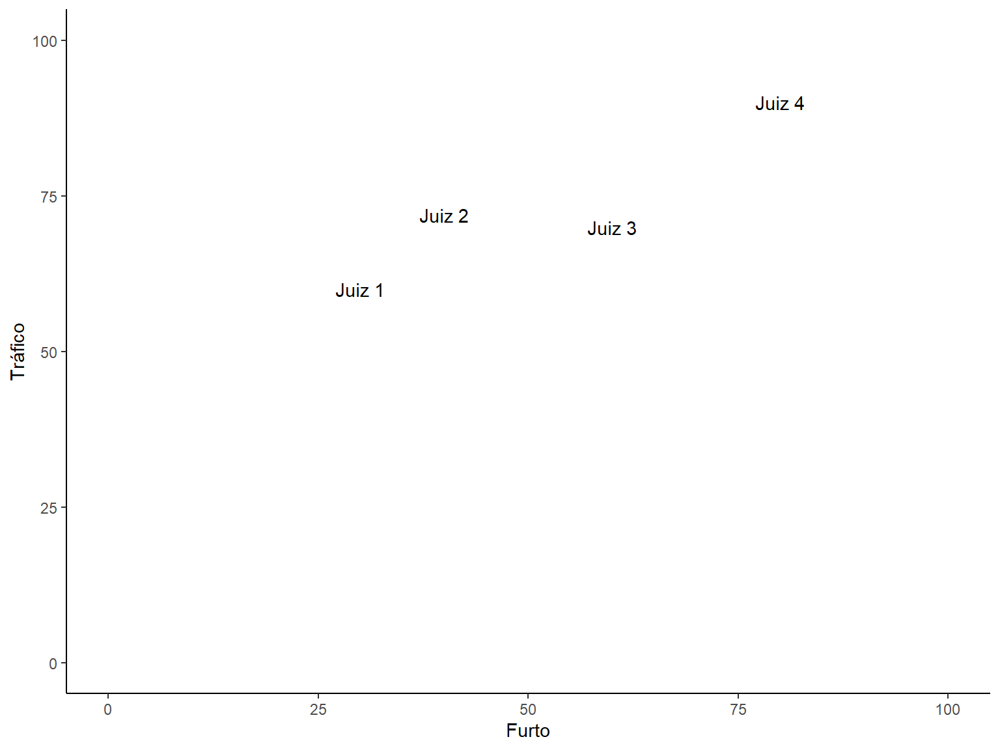

| Caso | Decisão |
|---|---|
| Situação 1 | |
| Acusado de tráfico. Segundo policiais, o acusado jogou uma sacola no chão contendo drogas às 18hrs. O réu negou e apresentou provas de que havia trabalhado como ajudante de pedreiro até às 17hrs. | Condenação |
| Acusada de tráfico. Segundo policiais, a ré jogou um embrulho no chão contendo drogas. A ré negou e disse que estava apenas no lugar ‘errado, na hora errada’. | Absolvição |
| Situação 2 | |
| Acusado de furto. Furtou cinco cuecas no valor de R$ 41,95. | Condenação |
| Acusado de furto. Furtou uma furadeira elétrica no valor de R$ 252,90 | Absolvição |
| Teorias | Incentivos.relevantes | Comportamento.Predito | Explicação |
|---|---|---|---|
| Atitudinal | Sim | Sincero | Ativação das preferências políticas |
| Não | Sincero | Ativação das preferências políticas | |
| Estratégica | Sim | Sofisticado | Maximização dos objetivos |
| Não | Sincero | Ausência de incentivos relevantes |
Teoria Atitudinal - Os juízes decidem de acordo com suas preferências políticas.
Teoria Estratégica - Os juízes decidem de acordo com suas preferências políticas:
Hipótese: Juízes punitivistas possuem uma maior probabilidade de proferirem uma sentença condenatória do que juízes garantistas
A preferência política é uma variável latente, isto é, não é passível de ser mensurada diretamente, diferente da altura, sexo ou peso, por exemplo. Em razão disso, para medi-la necessitamos de alternativas indiretas como:
Se a decisão judicial é afetada pela preferência polítia do juiz, isso significa que ele apenas decidiria pela absolvição se, e somente se, a média entre a absolvição e a condenação fosse maior do que seu ponto ideal. Inversamente, um juiz condenaria se, e somente se, a média entre a absolvição e a condenação fosse menor do que seu ponto ideal.
Para facilitar, a média entre a absolvição e a condenação será denominada “ponto de corte” do caso sob julgamento. Assim, um ponto ideal superior e outro inferior ao ponto de corte implica uma decisão condenatória e uma decisão absolutória, respectivamente.
Solução
Calcular a proporção de sentenças condenatórias dos juízes em cada crime. Como os processos são distribuídos aleatoriamente, com um tamanho de amostra razoável, as diferenças de caso para caso se tornam irrelevantes.
Dessa maneira, a proporção de decisões de condenação serve como uma boa estimativa do ponto ideal do juiz na dimensão política garantismo-punitivismo: quanto maior a proporção de condenação, mais punitivista será o juiz; quanto menor a proporção de condenação, mais garantista ele será.
Juízes não julgam apenas um tipo de crime, e sim vários. Assim, podemos obter a proporção de decisões condenatórias de um juiz em uma série de crimes. Saber as proporções de decisões condenatórias dos juízes em vários crimes nos permite estimar os seus pontos ideais com ainda maior precisão.
Podemos calcular os pontos ideais dos juízes a partir das proporções de condenações em uma série de crimes usando a fórmula da distância euclidiana:
\[d(a,b)=\sqrt{\sum_{i=1}^{n}(a_i - b_i)^2} \]
O cálculo das as distâncias euclidianas entre os juízes retorna uma matriz de distância.
Como o nosso objetivo é obter um vetor (que será a variável preferência política) e não uma matriz, iremos selecionar o juiz mais garantista como sendo a referência (ou o âncora) e calcularemos todas as distâncias a partir dele.
juizes <- data.frame("Furto" = c(30, 40, 60, 80), "Tráfico" = c(60, 72, 70, 90),
nome=c("Juiz 1", "Juiz 2", "Juiz 3", "Juiz 4"))
ggplot(juizes, aes(x=Furto, y=Tráfico))+
geom_text(aes(label=nome))+
coord_cartesian(xlim = c(0,100), ylim=c(0,100))+
theme_classic()
## 1 2 3 4
## 1 0.00000 15.62050 31.62278 58.30952
## 2 15.62050 0.00000 20.09975 43.86342
## 3 31.62278 20.09975 0.00000 28.28427
## 4 58.30952 43.86342 28.28427 0.00000
Neste exemplo, o Juiz 1 seria o âncora. Logo, os pontos ideais dos juízes 1, 2 3 e 4 seriam, respectivamente: 0, 15, 31 e 58.
O método proposto no capítulo anterior se baseia em dois parâmetros: 1) quantos (e quais) crimes serão utilizados para medir as preferências; 2) número mínimo de decisões proferidas por cada juiz em cada crime. Quanto maior forem ambos os parâmetros, mais preciso será o método
No entanto, os Juízes de 1º Grau, como já dito, nem sempre julgam todos os tipos de crime, de modo que aumentar a quantidade de crimes utilizados para medir as preferências, reduz a amostra de Juízes. O mesmo ocorre se aumentarmos o número mínimo de decisões por Juiz em cada crime. Às vezes, um Juiz até chega a proferir decisões em vários crimes, mas nem sempre em grande quantidade.
Ou seja, o método desenvolvido apresenta um trade-off entre precisão e tamanho da amostra. Quanto mais preciso (maior o número de crimes e do número mínimo de decisões proferidas por cada Juiz em cada crime), menor será a amostra disponível de Juízes, prejudicando o teste da hipótese.
A estratégia adotada foi a de testar a hipótese a partir de algumas combinações dos parâmetros, sempre mantendo uma amostra final superior a 30 Juízes, quais sejam: 1) Furto e Roubo com, no mínimo, 100 decisões por crime; 2) Furto, Roubo e Receptação com, no mínimo, 50 decisões por crime; 3) Furto, Roubo, Receptação e Tráfico com, no mínimo, 30 decisões por crime.
Outras combinações podem ser testadas através do Dashboard ou fazendo o download da base de dados e dos códigos no endereço: https://dataverse.harvard.edu/dataset.xhtml?persistentId=doi:10.7910/DVN/TCYTEO
| Estimate | Std. Error | Razão de chances | Intervalo | Pr(>|z|) | |
|---|---|---|---|---|---|
| Intercepto | 0.233 | 0.747 | 1.262 | 0.292 , 5.455 | 0.755 |
| Preferência | 0.037 | 0.001 | 1.038 | 1.035 , 1.041 | 0 |
| IDHM | -2.323 | 0.769 | 0.098 | 0.022 , 0.442 | 0.003 |
| Taxa de Homicídio | -0.019 | 0.003 | 0.982 | 0.976 , 0.988 | 0 |
| Entrância inicial -Ref: Entrância Final | 0.69 | 0.538 | 1.994 | 0.695 , 5.719 | 0.199 |
| Entrância intermediária -Ref: Entrância Final | 0.615 | 0.146 | 1.85 | 1.39 , 2.462 | 0 |
| Preferência: Entrância Inicial | -0.005 | 0.01 | 0.995 | 0.976 , 1.015 | 0.622 |
| Preferência: Entrância Intermediária | -0.01 | 0.003 | 0.99 | 0.985 , 0.995 | 0 |
| Estimate | Std. Error | Razão de chances | Intervalo | Pr(>|z|) | |
|---|---|---|---|---|---|
| Intercepto | -2.4 | 1.052 | 0.091 | 0.012 , 0.712 | 0.022 |
| Preferência | 0.038 | 0.002 | 1.039 | 1.036 , 1.042 | 0 |
| IDHM | 1.206 | 1.09 | 3.34 | 0.394 , 28.293 | 0.269 |
| Taxa de Homicídio | -0.024 | 0.005 | 0.976 | 0.966 , 0.986 | 0 |
| Entrância inicial -Ref: Entrância Final | 0.335 | 0.893 | 1.397 | 0.243 , 8.038 | 0.708 |
| Entrância intermediária -Ref: Entrância Final | -0.364 | 0.187 | 0.695 | 0.481 , 1.003 | 0.052 |
| Preferência: Entrância Inicial | -0.001 | 0.017 | 0.999 | 0.966 , 1.034 | 0.96 |
| Preferência: Entrância Intermediária | 0.013 | 0.004 | 1.013 | 1.004 , 1.021 | 0.004 |
| Estimate | Std. Error | Razão de chances | Intervalo | Pr(>|z|) | |
|---|---|---|---|---|---|
| Intercepto | -1.922 | 1.262 | 0.146 | 0.012 , 1.736 | 0.128 |
| Preferência | 0.026 | 0.002 | 1.026 | 1.023 , 1.03 | 0 |
| IDHM | 0.155 | 1.331 | 1.167 | 0.086 , 15.87 | 0.907 |
| Taxa de Homicídio | -0.006 | 0.005 | 0.994 | 0.985 , 1.003 | 0.205 |
| Entrância inicial -Ref: Entrância Final | 1.459 | 0.927 | 4.303 | 0.699 , 26.484 | 0.116 |
| Entrância intermediária -Ref: Entrância Final | -0.753 | 0.255 | 0.471 | 0.286 , 0.776 | 0.003 |
| Preferência: Entrância Inicial | -0.016 | 0.017 | 0.984 | 0.953 , 1.017 | 0.339 |
| Preferência: Entrância Intermediária | 0.019 | 0.005 | 1.019 | 1.01 , 1.028 | 0 |
A razão de chances da preferência política ficou nos três modelos entre 1.023 a 1.042. Isso significa que a cada aumento de uma unidade no ponto ideal (em direção a uma ideologia mais punitivista) há um aumento entre 2.3% a 4.2% de chance de o juiz proferir uma sentença condenatória, ao invés de uma absolutória.
Exemplificando, os Juízes que se situaram nos extremos ideológicos do último modelo (3ª Combinação) estavam a uma distância entre si de 71 unidades. A partir da razão de chances, podemos dizer que o Juiz mais punitivista tinha aproximadamente entre 2,63 a 4 vezes mais chances de proferir uma sentença condenatória do que o Juiz mais garantista da amostra.
Sentencing: Características dos juízes também importam
Comportamento Judicial: Postulado da hierarquia?
Em termos simples, os achados empíricos desta dissertação indicam que juízes que possuem uma preferência política a favor de um recrudescimento das punições distribuídas pelo governo, aumento de penas e encarceramentos tenderão, mesmo diante das mesmas evidências, provas, leis, princípios e jurisprudências, a proferir sentenças condenatórias com maior frequência do que aqueles juízes que possuem preferências políticas opostas.
Exemplo: casos narrados na introdução sobre Furto
1 - Mensuração das preferências políticas em uma dimensão fundamental (liberal-conservador)
2 - Construção de um desenho de pesquisa capaz de testar qual das duas teorias (Atitudinal e Estratégica) possui um maior poder explicativo
3 - Estimação do efeito das preferências políticas sobre o tamanho das penas
4 - Identificação dos vieses e heurísticas que afetam os Juízes de 1º Grau
5 - Mensuração das preferências de todos os juízes em uma escala comparável